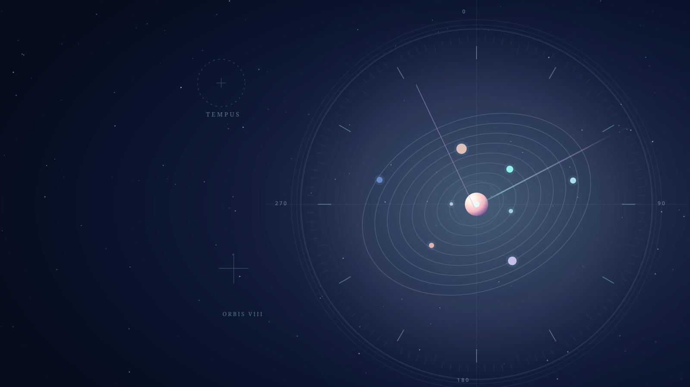

GODZINY, KTÓRYCH NIE ZNA ŻADEN ZEGAR NA ZIEMI
Rok nie trwa rok.
Na Merkurym rok mija po 88 ziemskich dniach. Na Neptunie — po prawie 165 ziemskich latach. Wszystkie te światy krążą wokół jednego Słońca, lecz każdy odmierza własny rytm. Skąd bierze się ta różnica?
Nasze 365 dni nie jest regułą Wszechświata.
Rok kojarzy się z kalendarzem, kolejnymi porami roku i powrotem do tej samej daty. Ale w astronomii trzeba najpierw zapytać: jakie zdarzenie ma zakończyć nasz pomiar?
Jeżeli mierzymy czas, w którym planeta obiega Słońce względem odległych gwiazd, otrzymujemy jej okres orbitalny, czyli rok gwiazdowy. Ziemi zajmuje to około 365,256 doby. Rok związany z porami roku jest nieco krótszy — to rok zwrotnikowy, około 365,242 doby — bo oś Ziemi powoli zmienia kierunek. [1, 2]
Jest jeszcze doba, czyli okres związany z obrotem planety wokół osi. I jest doba słoneczna, niekoniecznie równa okresowi takiego obrotu. Rok, doba i pora roku opisują różne zjawiska. W tym rozdziale zajmujemy się ruchem wokół Słońca.
W przybliżeniu tyle ziemskich dób trwa jeden obieg Słońca.
W przybliżeniu tyle ziemskich lat trwa jeden obieg Słońca.
Wartości zaokrąglone; nie są okresami obrotu planet wokół własnej osi. Dla planet mówimy o czasie orbitalnym w ziemskich dobach lub latach.
Osiem orbit. Osiem innych kalendarzy.
W jednym ziemskim roku Merkury zdąży wykonać ponad cztery obiegi Słońca. Mars nie zdąży nawet zakończyć jednego. Neptun wykona zaledwie ułamek procenta całego okrążenia. [1]
Zestawienie okresów gwiazdowych, wartości zaokrąglone do celów dydaktycznych. Jedna jednostka „rok ziemski” to tutaj około 365,256 doby, nie zawsze dokładnie 365 dni kalendarzowych. [1, 3]
Błękitny i fioletowy wycinek powstały z równych przedziałów czasu w obliczeniu elipsy Keplera. W pobliżu Słońca planeta musi przebyć dłuższy odcinek toru w tym samym czasie. Kształt tej elipsy jest celowo mocno wydłużony, by podkreślić efekt — większość planet ma znacznie mniej wydłużone orbity.
Elipsa, nie idealne koło.
Planety okrążają Słońce po orbitach zbliżonych do elips. Słońce znajduje się w jednym z ognisk, a nie dokładnie w środku geometrycznym elipsy.
Równe pola w równych czasach.
Blisko peryhelium planeta porusza się szybciej, blisko aphelium — wolniej. Wynika to z zachowania momentu pędu w centralnym polu grawitacyjnym.
Im dalej, tym dłużej.
Kwadrat czasu obiegu jest proporcjonalny do sześcianu wielkiej półosi orbity. Dlatego zewnętrzne planety mają znacznie dłuższe lata.
Odległość zmienia rytm.
Trzecie prawo Keplera można zapisać zwięźle, jeśli mierzymy okres w ziemskich latach gwiazdowych, a wielką półoś w jednostkach astronomicznych i traktujemy masy planet jako bardzo małe względem masy Słońca.
T — okres w latach ziemskich; a — wielka półoś orbity w AU.
Dokładniejsze prawo Newtona uwzględnia sumę mas obu ciał. Model rzeczywisty wymaga także poprawek na wzajemne oddziaływania planet. [4]Mars ma wielką półoś orbity około 1,524 AU. Zatem T ≈ √(1,524³) ≈ 1,88 roku ziemskiego. To niemal dwa razy dłużej niż na Ziemi, choć Mars jest od Słońca tylko około półtora raza dalej.
Jedno przesunięcie. Osiem różnych wyników.
To najmniejszy eksperyment w całym rozdziale. Nie potrzebuje animacji ani procesora graficznego: wybierz, ile ziemskich lat upłynie, i zobacz liczbę obiegów na innych planetach. Każdy ma swój własny „rok”.
Wskazówki pokazują jedynie część aktualnego okrążenia; liczby uwzględniają również pełne obiegi. Obliczenie to upływ czasu / średni okres orbitalny, bez modelowania zmieniających się położeń. Wszystkie wyniki są przybliżeniami. Nie jest to symulator dat kalendarzowych.
Możesz przyspieszyć Układ Słoneczny. Nie przyspieszysz fizyki.
Jedna sekunda. Jeden dzień.
W planetarium wybierzesz tempo 1 dzień/s. Ziemskie planety przesuną się wtedy zauważalnie, choć ruch dalekich olbrzymów pozostanie niewielki. To przyspieszenie wyświetlania osi czasu, nie rzeczywiste przyspieszenie planet.
Jedna sekunda. Jeden rok.
Przełącz na 1 rok/s. Merkury zacznie obiegać Słońce wielokrotnie szybciej na ekranie niż Neptun. Nie porównuj jednak prędkości ruchu pikseli: odległości i rozmiary na ekranie mogą być przeskalowane.
A gdyby czas biegł wstecz?
Wybierz −1 dzień/s. Pozycje planet będą pokazywane dla coraz wcześniejszych dat. Nie odwracamy prawa przyczynowości — tylko oglądamy model dla wcześniejszych chwil.
Daty i okresy określają położenia orbitalne; tempo symulacji to szybkość przewijania modelowanego czasu. Powrót o jeden ziemski rok nie ustawia wszystkich planet z powrotem w dokładnie tym samym układzie.
W laboratorium sterujesz czasem. Sprawdź cztery hipotezy.
To ten sam aktualny silnik planetarium, który poznałeś w etapie 1. Nie rekonstruujemy historycznej wersji 2.0 — wykorzystujemy dzisiejsze obliczenia orbitalne.
Rok kontra sekunda
Włącz „Cały Układ”, ustaw tempo 1 rok/s i obserwuj Merkurego. Ile obiegów powinien wykonać przez 1 sekundę symulacji?
Dziesięć lat w obie strony
Przesuń suwak czasu, następnie użyj przycisku „Teraz”. Czy model pozwala wrócić do wybranej daty?
Dlaczego nie wraca?
Ustaw różnicę około jednego ziemskiego roku. Sprawdź, jak mocno pozycja Marsa różni się od pozycji wyjściowej.
Wybierz dwa odległe światy
Porównaj Merkurego i Neptuna w ciągu tej samej zmiany daty. Zwróć uwagę na prawie nieruchomy wygląd dalekiego olbrzyma.
Zakres modelu: ATLAS SOLARIS oblicza przybliżone położenia planet na podstawie elementów NASA/JPL, dopasowanych dla lat 1800–2050. Jest to model dydaktyczny. Nie należy go stosować do nawigacji kosmicznej ani przewidywania dokładnych obserwacji wymagających pełnych efemeryd. Sterowanie czasem nie odtwarza wszystkich skutków wielociałowej dynamiki z precyzją numerycznego modelu JPL Horizons. Pełne 3D wymaga GPU — uruchamia się wyłącznie na Twoje żądanie.